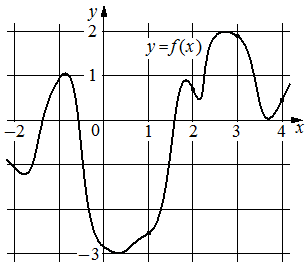

Авторский разбор и аудит предварительны; внешней экспертизы нет.
Модель автора: claude-opus-5-5 (opus; effort=low); в основных частотах: True ·
Впишите правильный ответ.
На рисунке изображён график функции . На оси абсцисс отмечены точки 1, 2, 3, 4. В какой из этих точек значение производной
функции наименьшее? В ответе укажите эту точку.

КЭС: 4.2 Применение производной к исследованию функций на монотонность и экстремумы. Нахождение наибольшего и наименьшего значения функции на отрезке
2
| ID / вход | Действие | Результат | Локальные KC |
|---|---|---|---|
| S1 · condition | По графику определить характер монотонности функции в каждой из отмеченных точек 1, 2, 3, 4 и тем самым знак производной | В точках 1 и 4 функция возрастает (f'>0); в точках 2 и 3 убывает (f'<0) | KC1 |
| S2 · S1, condition | Сравнить крутизну убывания графика в точках с отрицательной производной | В точке 2 график убывает круто (между локальным максимумом около 1,8 и локальным минимумом около 2,2), в точке 3 — полого вблизи максимума около 2,8; наименьшая производная в точке 2 | KC2 |
[
{
"id": "M1",
"name": "Отбор по знаку производной, затем сравнение наклона",
"step_ids": [
"S1",
"S2"
]
}
]Вход: график функции и точка абсциссы. Операция: установить, возрастает или убывает функция в окрестности точки, и вывести знак производной. Граница: точки дифференцируемости вне экстремумов.
{
"local_kc_id": "KC1",
"status": "new_candidate",
"catalog_kc_id": null,
"evidence": [
{
"ref": "step:S1:action",
"quote": "По графику определить характер монотонности функции в каждой из отмеченных точек 1, 2, 3, 4 и тем самым знак производной"
},
{
"ref": "step:S1:result",
"quote": "В точках 1 и 4 функция возрастает (f'>0); в точках 2 и 3 убывает (f'<0)"
},
{
"ref": "image:assets/c618fad0f004feacda64e77f.png",
"region_description": "График y=f(x) на [-2;4,2]: около x=1 кривая поднимается от минимума около (0,4;-3); около x=2 спускается от локального максимума около (1,8;0,9) к минимуму около (2,2;0,5); около x=3 спускается после максимума около (2,8;2); около x=4 поднимается от минимума около (3,7;0)"
}
],
"context_refs": [
"condition",
"image:assets/c618fad0f004feacda64e77f.png"
],
"alternatives_checked": [
{
"catalog_kc_id": "derivative_monotonicity",
"reason": "Обратное направление вывода: узел выводит монотонность из знака производной, а здесь знак производной выводится из наблюдаемой по графику функции монотонности."
},
{
"catalog_kc_id": "literal_9aee0783618d",
"reason": "Относится к графику производной (выше/ниже оси), а в задаче дан график самой функции."
},
{
"catalog_kc_id": "graph_coordinates",
"reason": "Считывание координат точек, а не направления изменения функции и знака производной."
}
],
"rationale": "Операция: по графику функции установить возрастание/убывание в окрестности отмеченной точки и вывести знак производной. Объект — график f, не f'. Ни одно определение каталога не описывает этот переход от монотонности к знаку производной.",
"proposal": {
"name": "Определять знак производной по монотонности графика функции",
"definition": "По графику функции y=f(x) установить, возрастает или убывает функция в окрестности точки дифференцируемости, и сделать вывод о знаке f'(x0) (неотрицательна/неположительна; строгий знак — при видимом ненулевом наклоне)."
},
"blocking": false,
"issue_ids": []
}Вход: график функции и несколько точек с известным знаком производной. Операция: сравнить наклон касательных, учитывая знак, и выбрать наименьшее/наибольшее значение. Граница: качественное сравнение при визуально различимом наклоне.
{
"local_kc_id": "KC2",
"status": "new_candidate",
"catalog_kc_id": null,
"evidence": [
{
"ref": "step:S2:action",
"quote": "Сравнить крутизну убывания графика в точках с отрицательной производной"
},
{
"ref": "step:S2:result",
"quote": "В точке 2 график убывает круто (между локальным максимумом около 1,8 и локальным минимумом около 2,2), в точке 3 — полого вблизи максимума около 2,8; наименьшая производная в точке 2"
},
{
"ref": "image:assets/c618fad0f004feacda64e77f.png",
"region_description": "Участок у x=2: резкий спуск между пиком около (1,8;0,9) и впадиной около (2,2;0,5); участок у x=3: пологий спуск вскоре после вершины около (2,8;2)"
}
],
"context_refs": [
"step:S1:result",
"image:assets/c618fad0f004feacda64e77f.png"
],
"alternatives_checked": [
{
"catalog_kc_id": "literal_9aee0783618d",
"reason": "Даёт только знак по графику производной, без сравнения величин наклона."
},
{
"catalog_kc_id": "derivative_monotonicity",
"reason": "Связывает знак и монотонность, но не сравнивает значения производной."
}
],
"rationale": "Операция: сравнить значения производной в точках как угловые коэффициенты касательных к графику функции с учётом знака и выбрать наименьшее. В каталоге нет узла о геометрическом смысле производной как наклона касательной.",
"proposal": {
"name": "Сравнивать значения производной по наклону касательных к графику",
"definition": "Интерпретировать f'(x0) как угловой коэффициент касательной к графику f и качественно сравнить значения производной в нескольких точках с учётом знака; применимо при визуально различимом наклоне."
},
"blocking": false,
"issue_ids": [
"i1"
]
}[ "Сравнение наклона в точках 2 и 3 выполнено визуально по рисунку" ]
[
{
"id": "i1",
"kind": "boundary",
"refs": [
"step:S2:result",
"image:assets/c618fad0f004feacda64e77f.png"
],
"description": "Сравнение наклона в точках 2 и 3 только визуальное; по рисунку спуск у x=2 заметно круче, чем у x=3, ответ 2 согласуется с рисунком. Неточность: S2 описывает точку 2 как лежащую между максимумом около 1,8 и минимумом около 2,2 — на рисунке это верно, но точка 3 названа «вблизи максимума около 2,8», что тоже условно; на соответствие не влияет.",
"blocking": false,
"affected_local_kc_ids": [
"KC2"
]
}
]{
"author_path": "data/annotation/runs/2026-11-09-fipi-team-bogdan108-next-100/raw/author/A2E26B.json",
"auditor_path": "data/annotation/runs/2026-11-09-fipi-team-bogdan108-next-100/raw/auditor/A2E26B.json",
"accepted_after_review": null
}